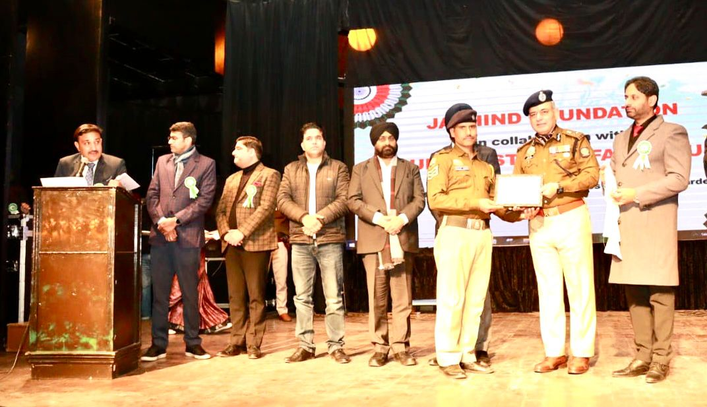
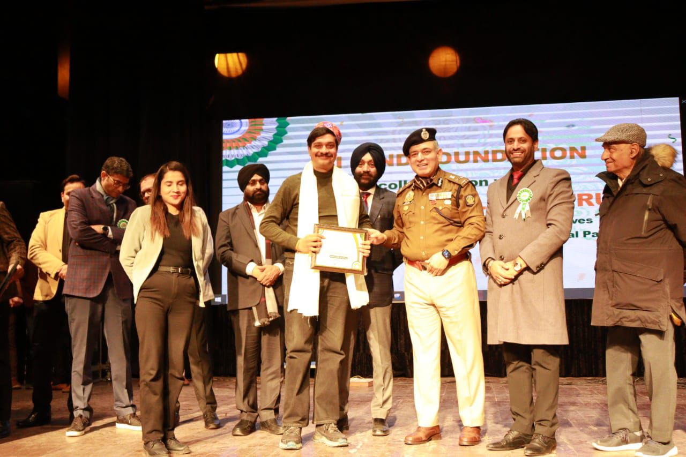
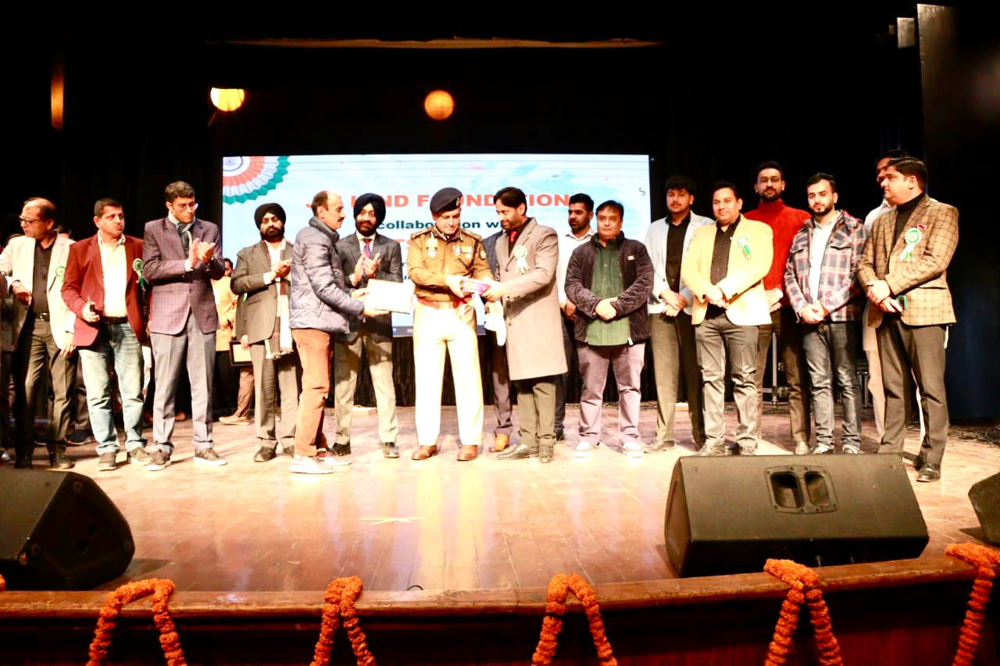
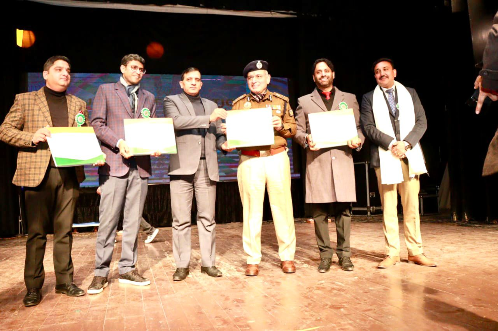
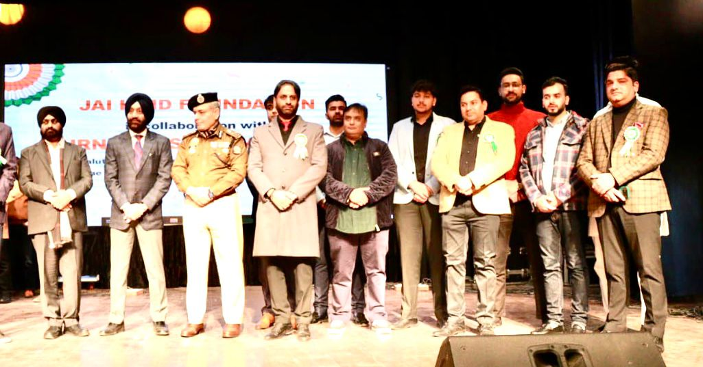
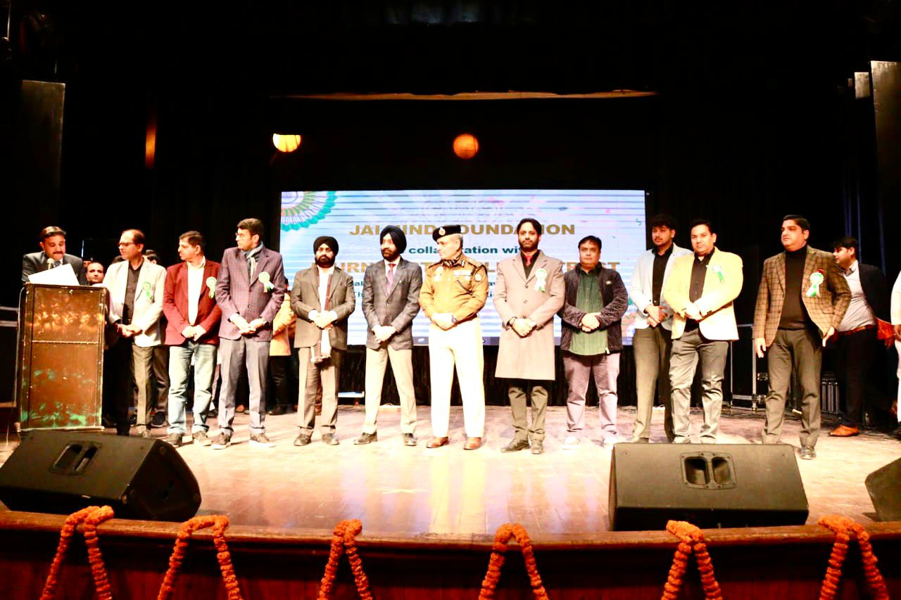
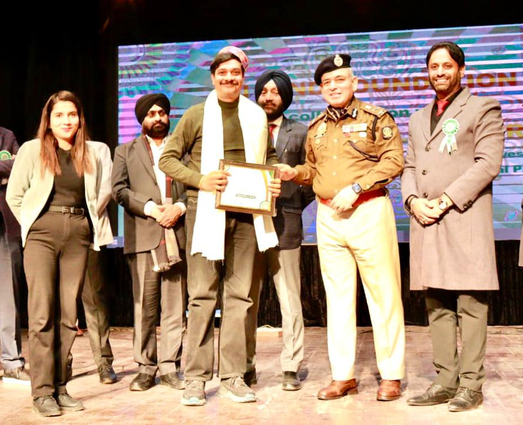

Celebrating Journalism in Pictures








Founded in 2021, Journalist Welfare Trust is a registered trust accredited under the Government of India, dedicated to the welfare, protection, and empowerment of journalists across India. We stand for press freedom, financial aid in hardship, and a strong professional community.







Advocating for fairness, accuracy, and transparency in media reporting across India
Protecting the rights of journalists and ensuring access to information is never compromised
Skills training, mentorship, career development resources, and community guidance
Building a strong, supportive community for journalists at every stage of their career
One-time ex-gratia relief for families facing extreme hardship due to death, disability, or serious illness of a journalist
Learn more →Helping journalists navigate the Government of India's Journalist Welfare Scheme (JWS), including accredited and non-accredited journalists
Learn more →Information and assistance for medical welfare linked to government hospital empanelment schemes
Learn more →Professional development programs for journalists including digital skills, ethics, and career advancement
Learn more →From tribute functions to the Journalist Premier League — building bonds across the journalism fraternity
Explore events →"More than a game — a tribute to courage"
April 10 – May 3, 2026 · Tau Devi Lal Stadium, Panchkula
View Schedule & Fixtures →A salute to martyred journalists — the real heroes behind the headlines.
Match fixtures for the Journalist Premier League 2026 are now live. Punjab vs J&K Match 1 result: Punjab wins by 7 runs.
Read more →The United Press Club (Regd.) organised a function at Guru Nanak Dev Bhawan, Ludhiana to distribute Rs.51,000 cheques to families of departed journalists.
Read more →The Government of India reaffirms its commitment to journalist welfare, with 402 journalists or families assisted under JWS between 2014–25.
Read more →